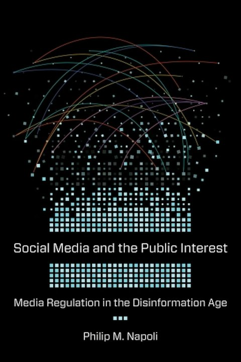
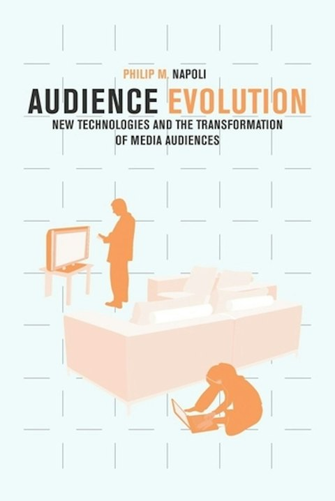
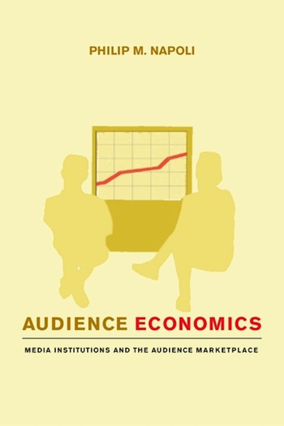
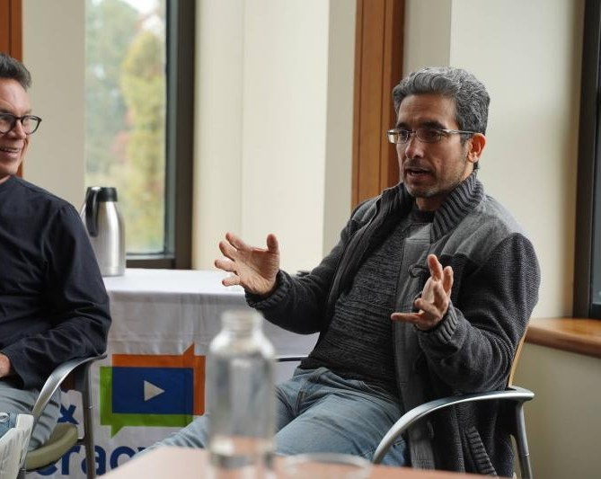
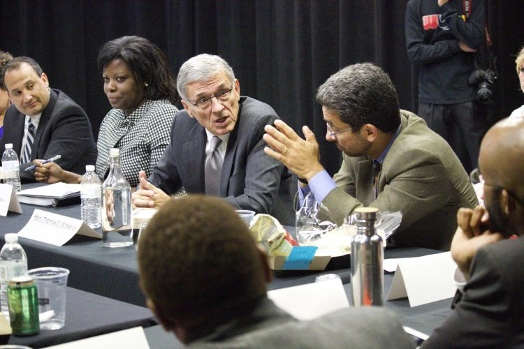

Social Media and the Public Interest
Examines social media platforms as news organizations and makes the case for regulating them under a public-interest standard.
Broadcast Education Association Book Award, 2020.
Philip M. Napoli
Dr. Philip M. Napoli joined Duke University’s Sanford School of Public Policy in 2016, served as its senior associate dean for faculty and research from 2020 to 2023, and has directed its DeWitt Wallace Center for Media & Democracy since 2021. He also leads the News Measures Research Project.
Before Duke, Dr. Napoli was a professor and associate dean for research at Rutgers University’s School of Communication & Information, and spent more than a decade on the Fordham University faculty, directing the Donald McGannon Communication Research Center.
Honors include a 2017 Andrew Carnegie Fellowship, the Broadcast Education Association Book Award (2020) and the AEJMC Robert Picard Award. Napoli is also a docent at the University of Helsinki and a nonresident fellow of the German Marshall Fund.
Citations: 13,371h-index: 50Google Scholar, November 2026
Napoli, P. M. (2026). From Patron to Persecutor: The Evolution of the US Government’s Role in Disinformation Research. Journalism History, 52(3), 259–275. https://doi.org/10.1080/00947679.2026.2659270
Traces the federal government’s shift from funding disinformation research to targeting it.
Napoli, P. M., Caplan, R., & Rogerson, K. (Eds.). (2026). De Gruyter Handbook of Technology, Media, and Democracy. De Gruyter. https://doi.org/10.1515/9783111317595
Includes the chapter “Disinformation Policy and Democratic Backsliding,” co-authored with Anna Maynard.
Meskouri, A., Gu, G., Mani, A., Socol, G., Walley, H., & Napoli, P. M. (2026). Attacks from Within: A Comparative Analysis of Inter-Journalism Disparagement Across the “Big Three” U.S. Cable News Networks [Working paper]. SSRN. https://doi.org/10.2139/ssrn.7525940
Measures inter-journalism disparagement, on-air attacks on other news organizations, across 3,543 Fox News, CNN and MSNBC transcripts from 2011 to 2025. Fox News averaged one such attack about every 15 minutes, MSNBC one every 61 and CNN one every 140.
Napoli, P. M. (2025). In pursuit of ignorance: The institutional assault on disinformation and hate speech research. The Information Society, 41(1), 1–17. https://doi.org/10.1080/01972243.2024.2419105
Documents the institutional assault on disinformation and hate speech research, drawing on more than 1,800 pages of documents.
Napoli, P. M., & Adi, S. (2025). On moving fast and breaking things . . . again: Social media’s lessons for generative AI governance. Information, Communication & Society, 29(6), 1912–1928. https://doi.org/10.1080/1369118X.2025.2513668
Draws on the record of social media governance to identify lessons for the regulation of generative AI.
Napoli, P. M., & Royal, A. (2025). Distinguishing Journalism from Political Influence Operations. Journal of Information Policy, 15, 243–276. https://doi.org/10.5325/jinfopoli.15.2025.0009
Examines how the press exemption in federal election law could be used to distinguish journalism from political influence operations.

Examines social media platforms as news organizations and makes the case for regulating them under a public-interest standard.
Broadcast Education Association Book Award, 2020.

Traces how the media industry, faced with a growing number of choices, began measuring audiences by engagement, appreciation and behavior as well as exposure.

Examines how media organizations and advertisers buy and sell audiences, and how the limits of audience measurement affect that market.
AEJMC Robert Picard Award for the best book in media management and economics.
Examines the principles behind electronic media regulation, including the public interest, localism, diversity and competition, and the process by which they are applied.

Columbia Journalism Review
Trump, Harris, and the Art of the InterviewQuoted calling the FCC’s moves against CBS and 60 Minutes “a fairly concerted effort to marginalize legitimate journalism.”
Newsweek
What Can Trump Do About His Jimmy Kimmel ProblemQuoted on the limits of the FCC’s power over ABC and Disney.
WFAE, Charlotte’s NPR station
One year into President Trump’s second administration, press freedoms are under attackInterviewed as a studio guest on Charlotte Talks.
97.9 The Hill (WCHL)
‘I’m Feeling Pretty Pessimistic’: Duke’s Philip Napoli on Meta Ending Fact-CheckingInterviewed on Meta’s decision to drop third-party fact-checking.
Tech Policy Press
Documenting the Assault on Disinformation and Hate Speech ResearchInterviewed on the campaign against disinformation research.
Bloomberg Opinion
Campaign Finance Reform Is Key to Curing Public Distrust in CongressQuoted on partisan websites that pose as local news to get around campaign finance rules.
Financial Times
US local news swamped by ‘pink slime’ as political influence ramps upQuoted on the spread of “pink slime” sites before the 2024 election and on the FEC’s media exemption.
American Crisis with Margaret Sullivan
Phil Napoli on the Fairness Doctrine and Fox NewsInterviewed on whether regulation could rein in Fox News without harming press freedom.
Poynter
Less than a third of Americans believe local news holds public officials accountable, poll findsQuoted on a Medill poll about trust in local news.
PolitiFact
US frets about TikTok feeding data to China; banning app won’t end the threat, experts sayInterviewed on TikTok, data brokers and the limits of a ban.
TIME
What Meta’s Latest Takedown of Fake Foreign Accounts Could Mean for the U.S. MidtermsQuoted on foreign influence operations ahead of the 2022 midterms.
Napoli is also a regular guest on WPTF’s Afternoon News in Raleigh, most recently on CBS News and 60 Minutes (December 2025).

Sanford School of Public Policy, Duke University